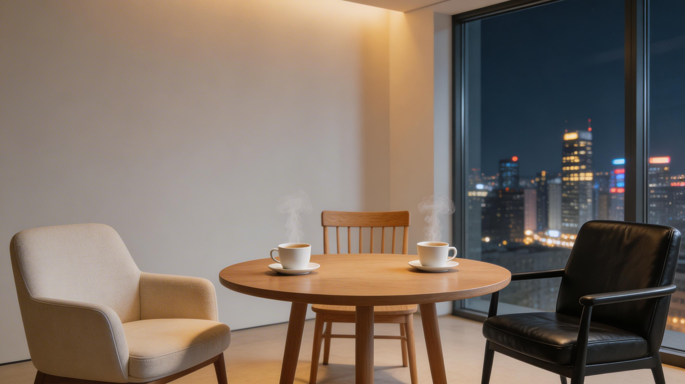

「未经审视的生活不值得过」
苏格拉底 · 也是我们坚持到现在的理由
豆摇锋，谐音「都要疯」——不复盘，都要疯。
我们是三个来自不同行业的朋友：一个做 AI 产品，一个做公众号写作，一个做硬件工程。2024 年 1 月 1 日，我们决定每周固定一个时间，坐下来，把这一周活过的日子摊开来看。
不是为了变得更高效，不是为了 KPI。是因为我们发现——一个人回头看，太容易放过自己；三个人一起看，那些「自以为懂了」「自以为做了」的地方，才会被照出来。

说出来，朋友可能看到它过期了。像打网球一样，一来一回的讨论会「扩散激活」自己其他的想法——而自言自语就像对墙打球，路线自己大都能预判。
每人每周写一份复盘文档。格式自定，可以是工作经验、读书心得、身体观察、自我反思、任务回顾——重要的是写下来。
会前互相阅读对方的文档，留下评论。参考亚马逊的飞阅会方式——先读完再开口，让讨论直奔重点。
每周固定时间，线上腾讯会议。不复述文档，直接讨论评论中的问题、分享经历、碰撞想法。
会后填写随会表单——本次收获、对他人的反馈（正面+负面）、待办事项。让复盘不止于谈话。
不同专业、不同行业，三个视角比一个看得全。人很难深入认识自己，但观察同伴的反应，能提高自己的「生存概率」。
「说话」比在心里想更能刺激大脑。思维方式和个人知识需要拿出来晒——脑子里的东西也会过期发霉。
先有草稿，才有修改的基础。如果连草稿都没有，那只是一厢情愿的想法，毫无意义。
以周为单位，看看自己磕了多少瓜子——设检查点，让正向反馈持续发生，知道自己走在正确的路上。
两个人太舒适就会懈怠。引入第三人，像中国引入特斯拉激活新能源产业——适度的张力让所有人都更好。
「每个人的精力有限，不可能成为每个行业的专家。」合理安排任务，关注当下，注意身体变化。
每周一期，以滚动叙事的方式记录我们的讨论。